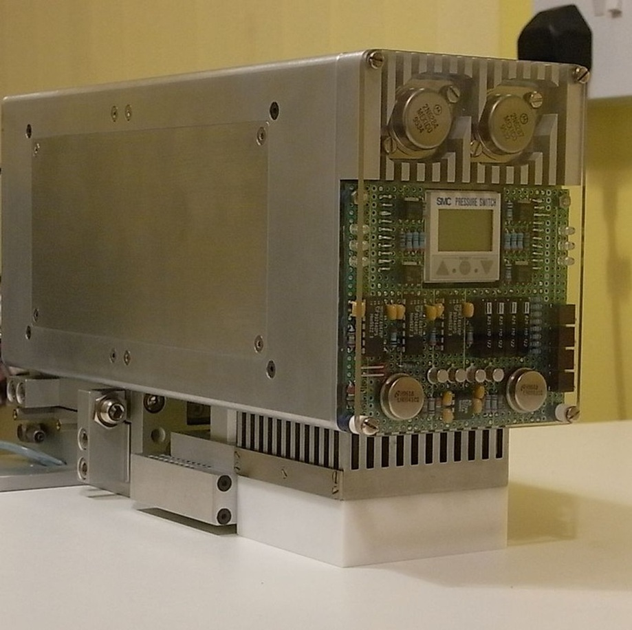
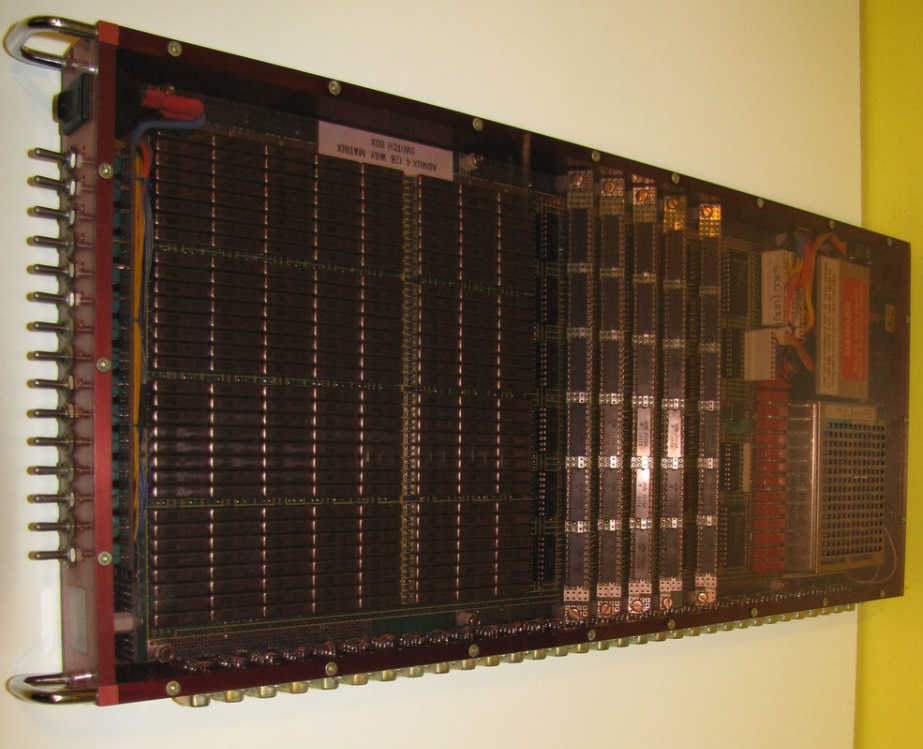
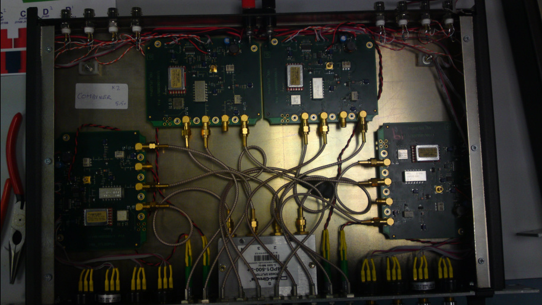
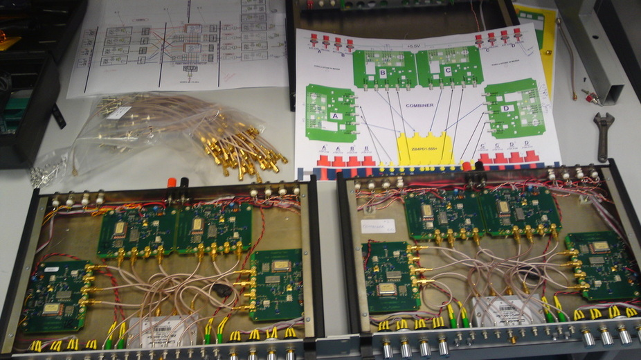
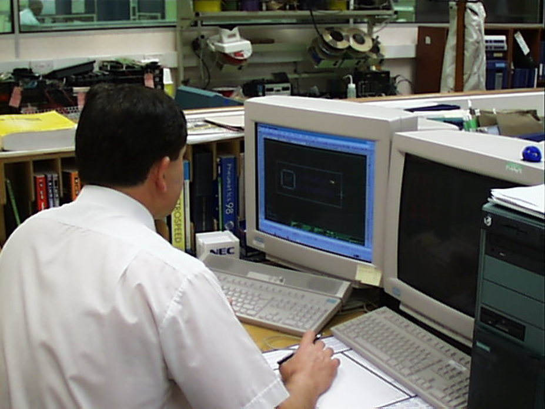
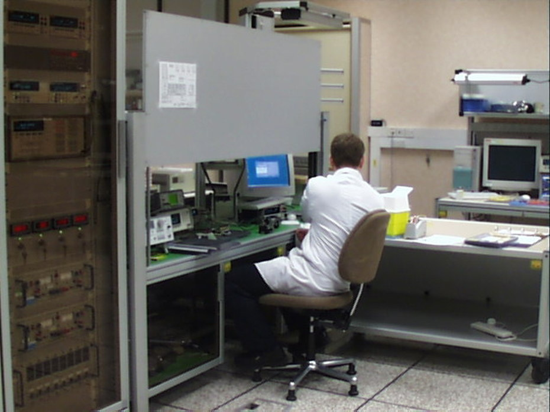

TEKfirm engineering is a specialised design and consultancy
service.
We provide professional high tech design and engineering services for the electronic, optoelectronics and electro-mechanical industries.
Tekfirm is company with over 25 years of experience with proven track record on adopting new technology and techniques to develop and introduce robust, efficient, traceable automated test solutions for manufacture of leading edge products within Aerospace, Commercial aircraft, Automotive, Telecommunications R&D and manufacturing sector.
We offer a fully integrated consultation through the engineering process, from concept right through to the design, prototype, build and test phases. If necessary we can project manage your own designs as well.
Our specialisation is in very high specification equipment design for the engineering industries. Our focus is on optical and high end electro-mechanical products but we have many years experience within the mechanical as well as electronic industries, and so can offer a tailored service no matter what your requirements are.
We can take your initial thumb nail designs and work with you to produce prototypes right through to fully working designs. Whether you need fully working models or simple mock ups, we have the experience and ability to provide a complete service.
Temperature Controlled RF ATE test fixture
An automatic test fixture for temperature cycling and life test of high pin count ASICs (up to1300 pin), Intel CPUs, Optical Components and all types semiconductors. The system operated from -10°C to +125°C at 5Ghz programmable step 1°C and accuracy of ±0.1°C.
To cover wide temperature range and hi accuracy and hi speed I used hi pressure dry oxygen for course and Peltier or thermoelectric coolers for fine tuning of the full temperature rang.
The equipment had the capability to fit and interface to both Agilent and Advantest ATE systems.
Coarse tuning, how does it work:
Compressed air is injected tangentially into a swirl chamber and accelerated to a high rate of rotation, the air spins at a high velocity, approx one million RPM (Please see air flow illustration below)
The molecules of hot and cold air are then separated due to the conical nozzle at the end of the tube and only the outer shell of the compressed air (hot air) is allowed to escape at that end. The remainder of the air (cold air) is forced to return in an inner vortex of reduced diameter within the outer vortex, and directed to point of use at -50 C°.
Fine tuning, how does it work:
A semiconductor Peltier cooler is driven by a linear bi-polar proportional control circuit, variable current is forced to + pole of the Peltier until the set temperature is achieved.
The set temperature is then stabilized and tracked to ±0.1 C° accuracy by a microcontroller circuit and analogue front end that converts the analogue signal to digital data then by using successive approximation technique the algorithm is analysed and monitored for accuracy and stability.

Custom RF ASIC electrical verification and
functional test fixture. David Aghdam 2006

System switching test set David Aghdam 2004

Base
Station Test Equipment RF INT Board David Aghdam 2010

Base
Station Test Equipment RF SW board David Aghdam 2010

David
Aghdam in R&D; LAB 1998

David
Aghdam in Test Automation LAB 2005